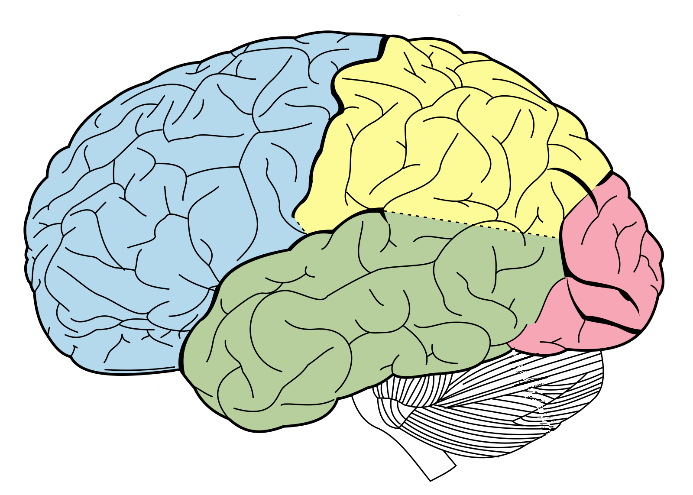

Das menschliche Gehirn ist eines der komplexesten Organe überhaupt. Es bildet zusammen mit dem Rückenmark das zentrale Nervensystem und ist die Schaltzentrale des Körpers. Im Gehirn werden Informationen aus der Umwelt verarbeitet, Bewegungen gesteuert, Entscheidungen getroffen und Gefühle erlebt. Ohne das Gehirn wären Denken, Lernen, Erinnern und bewusstes Handeln nicht möglich. Anatomisch lässt sich das Gehirn in mehrere Hauptbereiche unterteilen. Der größte Teil ist das Großhirn (Cerebrum). Es besteht aus zwei Hemisphären, die durch den sogenannten Balken miteinander verbunden sind. Die Oberfläche des Großhirns ist stark gefaltet, wodurch seine Fläche vergrößert wird.

Drücke auf einen der türkisfarbenen Punkte, um mehr zu erfahren!